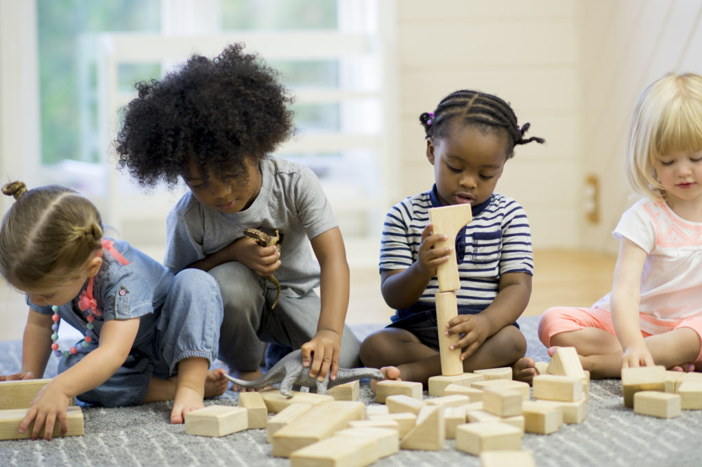

TRAINING SKILLS IN CHILDREN
TRAINING SKILLS IN CHILDREN
One time I lived near a neighbor who would issue all kinds of threat on his four-year-old daughter and his six year old son every night. One day while she was using the rod to “discipline” them for not eating their evening meal well, I decided to engage and get to know what made her shout, issue threats and spank the children, was there some skill training lacking?
I found her explanation both concerning and saddening at the same time only later to realize that, this was a common occurrence in many more families. She said that children had to eat to full because she did not want them to wake up hungry at night and bother her. Understandable, right?
While I agree that children sleeping well is most beneficial to them, I also ask myself if there are skills the parent can train to help the children feed better and sleep better. Is there training that can help children get better? Do children need to be skilled and do things for themselves or do they need to be supervised all the time?
In another family, a five-year-old would throw tantrums for hours if she needed something and the Nanny did not give it right away. This child would ask for milk and when placed before her she would cry to be fed, she would insist on the Nanny doing things for her including carrying her to bed during sleep time. This was a school going child.
One time on social media, a parent was asking for help on their child who had refused to wear part of her clothes because she constantly chose a red dress and so long as it was clean, it is the single one she picked. This parent was met with criticism on how she had allowed her child to rule over her while others comforted her and helped her understand that the child was just seeking her own independence.
This bring us to the question, what should we do for our children and what do we train them to do for themselves? At what stage do we begin skill training? Will the little children understand what is happening? These are some of the questions I have heard from parents.
Skills to train Between 1-3 years
- Potty Training – if the parent is harsh, angry, and mostly punishing the child at this point, the child becomes too neat, perfectionist and also carries toxic shame. This child is highly likely to be mean. Moderation is key in Potty-Training.
- Allow children to make decisions for themselves. Wearing clothes, feeding themselves, wearing their shoes. If they do it well, praise, clap, simply reward behaviour.
- Create safety in their learning, if they wear sweater inside out or shoes wrongly, praise them first, then show them how to do things better.
- Pouring food is okay as they learn to feed themselves, have them be in a space where you won’t need to get angry if they pour. Expecting perfection at this point is simply raising damaged children. At this stage do little for children, let them do most of their self-care work.
- Teach them to arrange the toys after play. If you are struggling to train, or you find it difficult training, that is normal, if you are constantly angry when they do not learn, you may benefit from finding professional help for yourself.
- Assertiveness training begins form age 1-3 and progresses to all other ages. If you allow children to make decisions for themselves, to talk to you, to ask you questions, to question your decisions over them, then you teach them how to defend themselves out there.
Is it okay to reward work well done at this time? Yes.
What kind of reward? Balance gifts with praise and encouragement. When gifts are used alone, they create a culture in children that every effort they take deserves money or gifts.
Assertiveness training begins form age 1-3 and progresses to all other ages.
If you allow children to make decisions for themselves, to talk to you, to ask you questions, to question your decisions over them, then you teach them how to defend themselves out there.
Skill training for Ages 3-6 years
Train them how to protect themselves against sexual predators. If parents are comfortable and are able to pass good lessons in sexuality, the children get confident sexually.
For sex education skills, go to:
Train them relationship skills -this is where girls become attracted to their daddies and boys their moms, while identifying with same gender for begging to learn gender roles. This age, both parents are supposed to be as present as possible and connect with children.
For single parents, get models of the opposite parent that you are not. (models are people you consider able to connect emotionally, non-abusive and have similar values with yourself)
Let children select meaningful activities for themselves. Train them how to take initiative by allowing them to choose their activities and only intervening when its necessary. Over protecting children at this point from imagined hurts only denies them an opportunity to learn the necessary skills.
So if you as a parent want to play with your children, ask them what they want you to play together and most of the time, allow them to choose. This is how they learn decision making skill. When this lacks, you will produce adolescents and adults who cannot make decisions.
Let children fix their own problems. They need to be able to open a packet of biscuits or candy (not healthy though), if they fight with friends, do not go and confront the friends, train your child how to be assertive (assertiveness is not telling them to go and fight outside too) if you are doing this, you need help as a parent because you are teaching violence.
This is the age where no child should be fed, unless they are special needs children or with developmental challenges. Ordinary children need to eat by themselves until they are full. If they refuse to eat, no pressure, let the food remain in specific place, when hungry, they will come back and eat.
6 years and above
- Begin to train actual skills
- Washing their own inner wears and handkerchiefs
- Making meals under your supervision
- Doing dishes
- Watering the garden
Let a child have some consistent role/ duty so that they learn the work culture.
This is the age to train value for money. Let them work for pay so that they understand that money is earned after work. Also at this point, you can teach that the money earned is not all spent. Some parents whose value system allow teach about Tithing at this point.
Saving part of what they earn needs to be taught too. Basically, for every money earned some is saved and some spent. When teaching savings, help children understand why saving money is important and answer all appropriate questions.
What kind of work do you pay?
- Eating?
- Clearing the table?
- Bathing well?
- Feeding well?
No. Don’t pay children to take care of themselves.
You pay what you ideally would have paid someone to do. You decide what that is since it differs from house to house.
When the children do not learn skills at this point, they end up feeling inferior among their peers. Research has showed that the child who lack skills by the age of 12 are less competent and have low self-esteem. It is also true that the children with no competences gained below 12 years find it difficult to function productively as adolescents.
Skill training between 12 to 19 years
Relationship skills – train and give children the liberty to relate with opposite gender. Let them have healthy relationships without specializing in any one in particular. This is the right stage to normalize sexual attraction. Let the adolescents know that it is okay to feel attracted to the opposite gender, in fact, it means that their sexual development is okay when they get sexual attractions.
It’s important for adolescents to understand that fantasizing is normal. That feeling too careful of their looks is fine. What they need to learn is how to manage all these new feelings and developments.
Management skills – how to manage the new bodily changes, the societal expectation of them, peer pressure and peer expectations, how to manage the new freedom they are seeking out for and how to fit into the family setup even as they deal with enjoying their new space.
Assertiveness skills – They seem to be finding it interesting to share and spend time with peers more than the parents. While there is nothing wrong with that, they need to learn how to say no to what is being done by others and is not acceptable to them. Being different is not a sign that something is wrong with them, it’s a measure of their own uniqueness.
Self-care skills – train adolescents how to always care for themselves when undertaking any activity or learning to ask themselves if it benefits them and if yes, in which ways? If it doesn’t benefit them then its important to understand that it may not work for them in the long run and that continuing with the activity is self-hate.
Communication and negotiation skills – they need to learn to share their perspective their thoughts and feelings without shame. They need to learn that their thoughts and emotions matter. When they are given rules that do not go well with them, they need to feel free to negotiate their way to achieve something that works for them.
Problem solving and decision making – they need to learn to effectively solve problems and ask for help when they cannot. The adolescent needs to be allowed to make decisions and then countercheck with the parent or the adult in their life so that they can perfect the decision making.
There needs to be additional physical self-care skills where they can be able to make their own meals and do their own laundry, take care of their own bedrooms and study space so they learn to be overall responsible for their lives. No adult needs to clean after a teenager.